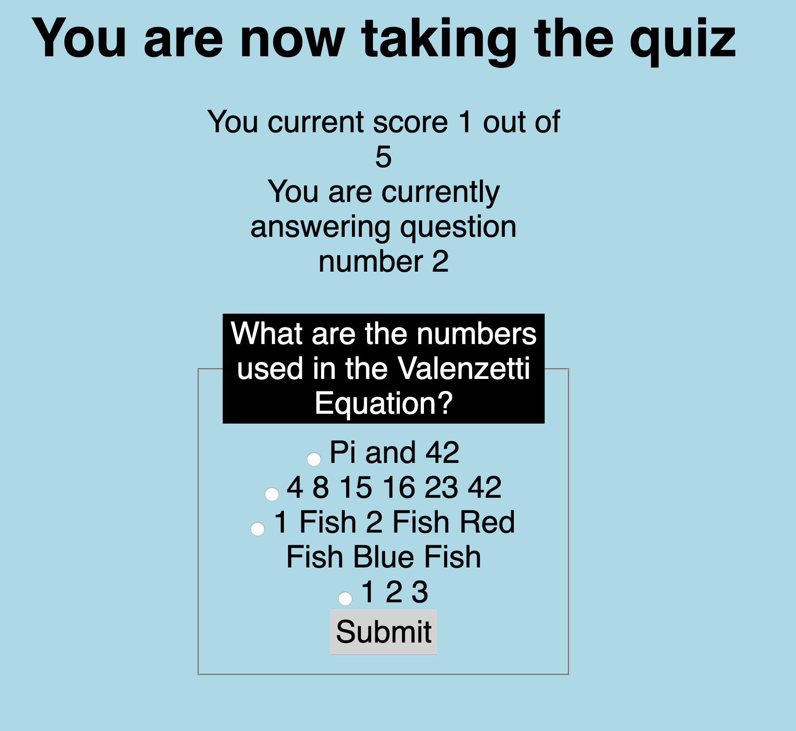

The LOST Quiz App
This Quiz app (my first at THINKFUL!) is based on the hit TV series LOST.
Test your knowledge of the hit TV show & take the quiz .... if you dare!

The Live App! GitHub Repository

I'm not a dog. This isn't my family. It's not my birthday. This is just here until I find a profile picture
Hey, I’m Andrew. I am currently a student in the Thinkful Engineering Immersion Program, aspiring to become a Full Stack Software Developer.
I am currently based in Scottsdale, Arizona having recently moved here from Long Island, New York, where the weather is BY FAR warmer and much more pleasant. Gotta work on the Pizza though ;)
My ambitions in the tech field are as much based on my desire to help people make complex things simple as well as to have the ability to make a difference and solve problems. Having worked in the banking industry for years, I recognize that making a difference and effecting change are near impossible. In software development, just about anything you can imagine is possible. I look forward to working with a team of programmers to make this happen.
Outside of coding, I am passionate about fitness, soccer, dogs, and being outdoors as much as is humanly possible.
This Quiz app (my first at THINKFUL!) is based on the hit TV series LOST.
Test your knowledge of the hit TV show & take the quiz .... if you dare!